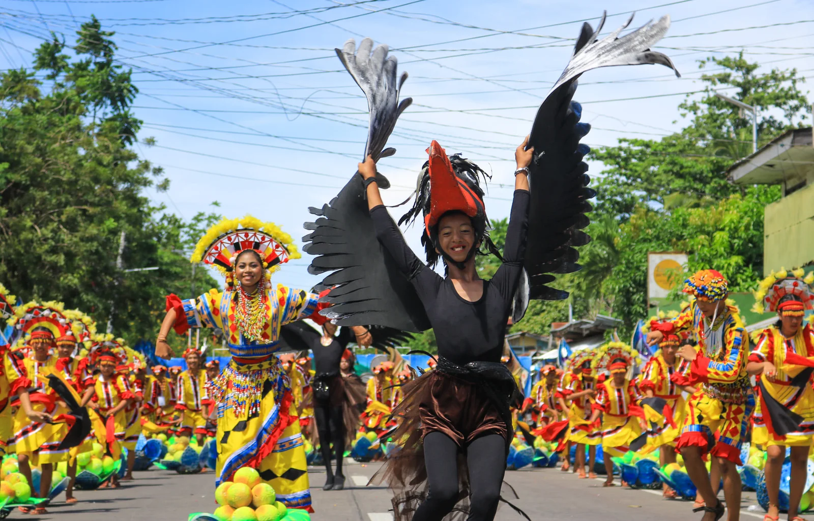
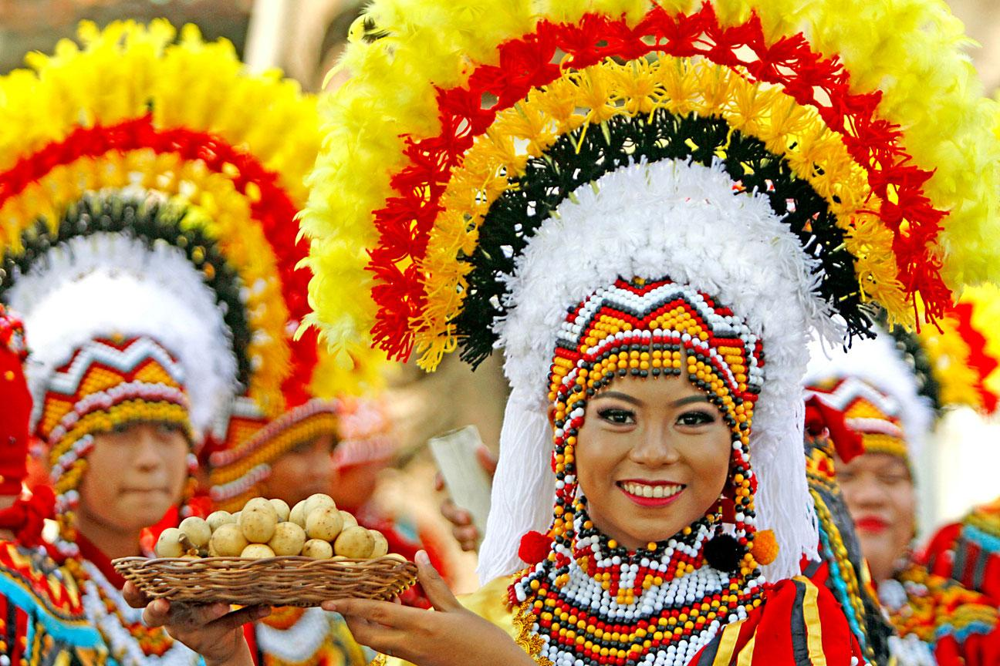
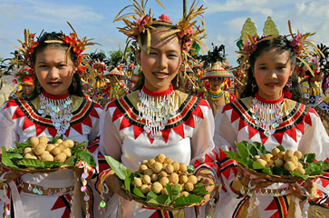

Celebrating Island Life
Camiguin's festivals are a vibrant expression of its people's identity, blending Catholic devotion with indigenous traditions and a deep love of community. The most celebrated is the Lanzones Festival, held every October, which honors the harvest of the island's most prized fruit — the sweet lanzones that thrive uniquely in Camiguin's volcanic soil. Streets fill with parades, street dancing, and lanzones-themed costumes in a burst of color and joy.
Beyond the Lanzones Festival, Camiguin observes a rich calendar of religious and cultural celebrations throughout the year, including Sinulog, town fiestas, and the deeply moving All Souls Day tradition at the Sunken Cemetery, where locals hold a candlelit mass near the cross in memory of those buried beneath the sea.



.jpg)

Lanzones Festival
Held every third week of October, this is Camiguin's biggest annual celebration. Street dancing, parades, food fairs, and the crowning of a festival queen highlight the week-long event.
Sunken Cemetery Mass
Every All Saints Day, locals hold a unique outdoor mass near the cross above the Sunken Cemetery — a deeply moving tradition unique to Camiguin.
Town Fiestas
Each of Camiguin's four municipalities celebrates its own patron saint's feast day with street parties, local food, cultural performances, and community gatherings.